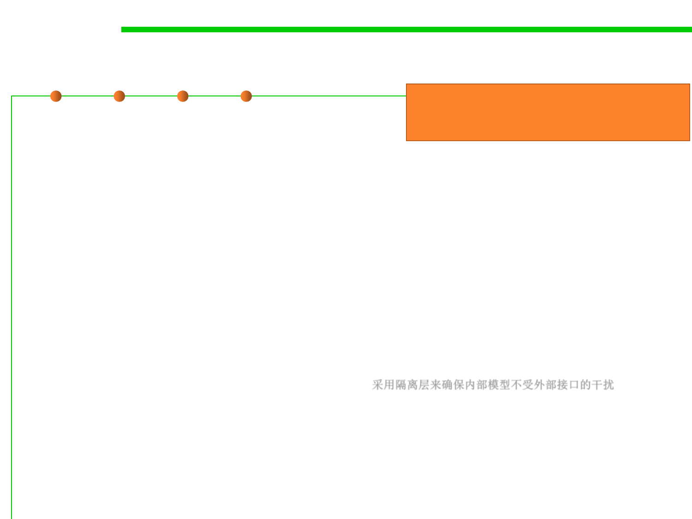

7.1 Robustness & Correctness
Comparison of Robustness and Correctness
▪ Externally and Internally:
Internally, seek correctness;
Externally, seek robustness.
– External interfaces (UI, input files, configuration, API etc) exist primarily
to serve users and third parties. Make them robust, and as
accommodating(乐于助人的) as possible, with the expectation that people
will input garbage.
– An application’s internal model (i.e. domain model) should be as simple
as possible, and always be in a 100% valid state. Use invariants and
assertions to make safe assumptions, and just throw a big fat exception
whenever you encounter anything that isn’t right.
– Protect the internal model from external interfaces with an anti-
corruption layer which maps and corrects invalid input where possible,
before passing it to the internal model. 采用隔离层来确保内部模型不受外部接口的干扰
▪ Make your external interfaces robust, and make your internal
model correct
– If you ignore users’ needs, no one will want to use your software.
– If you ignore programmers’ needs, there won’t be any software.